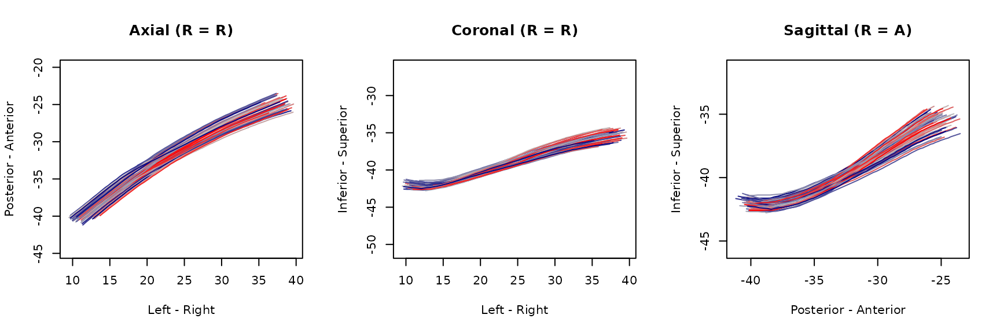

ieegio supports reading from and writing to multiple
imaging formats:
- Volume:
NIfTI&FreeSurfer MGH/MGZ - Surface:
GIfTI&FreeSurfergeometry, annotation, curvature/measurement,wformat - Streamlines:
TRK,TCK,TT(read-only),VTK,VTP, …
To start, please load ieegio. This vignette uses sample
data which requires extra download.
library(ieegio)
# volume file
nifti_file <- ieegio_sample_data("brain.demosubject.nii.gz")
# geometry
geom_file <- ieegio_sample_data(
"gifti/icosahedron3d/geometry.gii")
# measurements
shape_file <- ieegio_sample_data(
"gifti/icosahedron3d/rand.gii"
)
# time series
ts_file <- ieegio_sample_data(
"gifti/icosahedron3d/ts.gii")
# streamlines
trk_file <- ieegio_sample_data(
"streamlines/CNVII_R.trk")
tck_file <- ieegio_sample_data(
"streamlines/CNVII_R.tck")
tt_file <- ieegio_sample_data(
"streamlines/CNVII_R.tt")Volume files
ieegio::read_volume and
ieegio::write_volume provides high-level interfaces for
reading and writing volume data such as MRI,
CT. fMRI, etc.
Each volume data (NIfTI, MGH, …) contains a
header, a data, and a transforms
list.
volume <- read_volume(nifti_file)
volume
#> <Image Volume>
#> Type : rnifti/nifti
#> Shape: c(256L, 256L, 256L)
#> Transforms:
#> vox2ras:
#> [-1 0 0 131.6]
#> [ 0 0 1 -127.5]
#> [ 0 -1 0 127.5]
#> [ 0 0 0 1]
#> vox2ras_tkr:
#> [-1 0 0 128]
#> [ 0 0 1 -128]
#> [ 0 -1 0 128]
#> [ 0 0 0 1]
#> vox2fsl:
#> [1 0 0 0]
#> [0 1 0 0]
#> [0 0 1 0]
#> [0 0 0 1]The transforms contain transforms from volume (column, row, slice)
index to other coordinate systems. The most commonly used one is
vox2ras, which is a 4x4 matrix mapping the
voxels to scanner (usually T1-weighted) RAS
(right-anterior-superior) system.
Accessing the image values via [ operator. For
example,
volume[128, , ]Plotting the anatomical slices:
par(mfrow = c(1, 3), mar = c(0, 0, 3.1, 0))
ras_position <- c(-50, -10, 15)
ras_str <- paste(sprintf("%.0f", ras_position), collapse = ",")
for(which in c("coronal", "axial", "sagittal")) {
plot(x = volume, position = ras_position, crosshair_gap = 10,
crosshair_lty = 2, zoom = 3, which = which,
main = sprintf("%s T1RAS=[%s]", which, ras_str))
}
Surface files
Reading surface file using read_surface supports
multiple data types
library(ieegio)
# geometry
geometry <- read_surface(geom_file)
# measurements
measurement <- read_surface(shape_file)
# time series
time_series <- read_surface(ts_file)You can merge them to a single object, making an object with multiple embedding data-sets:
merged <- merge(geometry, measurement, time_series)
#> Merging geometry attributes, assuming all the surface objects have the same number of vertices.
print(merged)
#> <ieegio Surface>
#> Header class: basic_geometry
#> Geometry :
#> # of Vertex : 12
#> # of Face index : 20
#> # of transforms : 1
#> Transform Targets : Unknown
#> Measurements: `Shape001`
#> Time series:
#> # of time points: 4
#> Average slice duration: 1
#>
#> Contains: `geometry`, `measurements`, `time_series`Plot the surfaces in 3D viewer, colored by shape
measurement
Plot the normalized time-series data
ts_demean <- apply(
merged$time_series$value,
MARGIN = 1L,
FUN = function(x) {
x - mean(x)
}
)
merged$time_series$value <- t(ts_demean)
plot(
merged, name = "time_series",
col = c(
"#053061", "#2166ac", "#4393c3",
"#92c5de", "#d1e5f0", "#ffffff",
"#fddbc7", "#f4a582", "#d6604d",
"#b2182b", "#67001f"
)
)Streamline files
Reading streamlines via universal entry function
read_streamlines
trk <- read_streamlines(trk_file, half_voxel_offset = TRUE)
tck <- read_streamlines(tck_file)
tt <- read_streamlines(tt_file)To obtain the streamline data
message("Total number of streamlines: ", length(trk))
#> Total number of streamlines: 54
head(trk[[1]]$coords)
#> [,1] [,2] [,3]
#> [1,] 37.81250 -26.12500 -34.87500
#> [2,] 37.37500 -26.28125 -34.96875
#> [3,] 36.90625 -26.43750 -35.06250
#> [4,] 36.43750 -26.62500 -35.18750
#> [5,] 35.96875 -26.78125 -35.28125
#> [6,] 35.53125 -26.93750 -35.37500To preview the streamline data
pal <- colorRampPalette(c("navy", "grey", "red"))
plot(trk, col = pal(length(trk)))
To write the streamlines, for example, write tck file to
trk file:
# Create a temporary file
tfile <- tempfile(fileext = ".trk")
write_streamlines(x = tck, con = tfile)